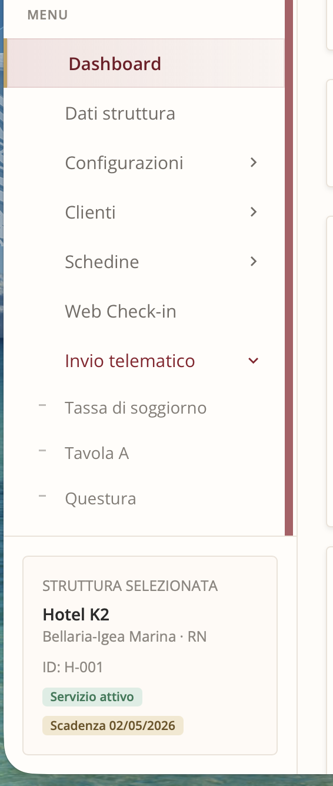
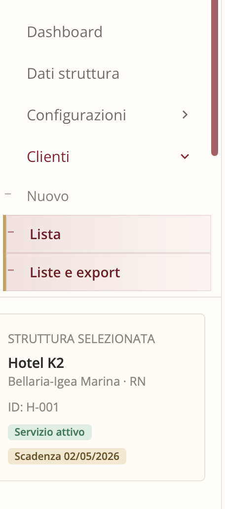
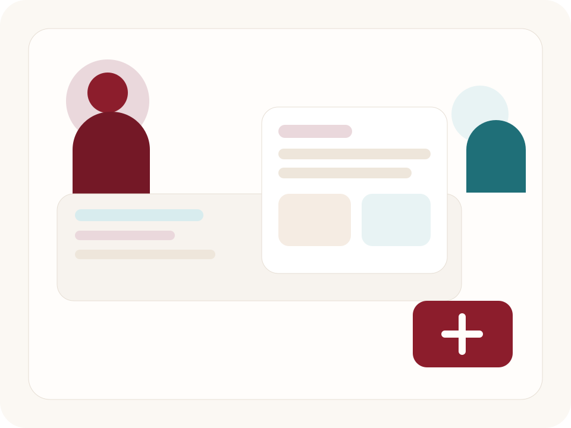
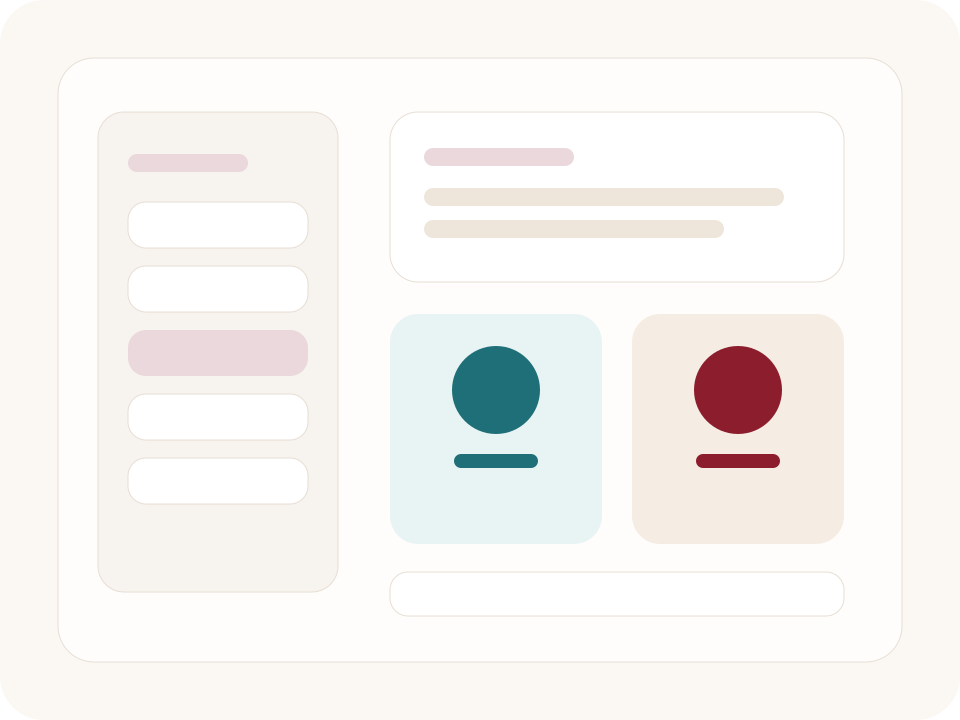

Percorso guidato del software
Una pagina pensata per insegnare come si usa Tanggo nella gestione quotidiana di clienti, schedine, web check-in e adempimenti.
Questo spazio presenta un percorso guidato per accompagnare la struttura nella comprensione del software, collegare un video dimostrativo e spiegare in modo ordinato come funziona il lavoro reale dentro la piattaforma.
A cosa serve questa pagina
Spiegare il software come un metodo di lavoro completo, non come una sequenza di schermate.
Qui la struttura deve capire come nascono i dati, come vengono riutilizzati, come si costruisce la schedina e come gli adempimenti restano dentro un percorso unico e coerente.
Come usarla bene
Come base per un video, una presentazione guidata o una lezione pratica sull'utilizzo del software.
Puoi usarla per introdurre il percorso, spiegare i moduli principali e accompagnare la struttura verso una comprensione chiara del prodotto.
Percorso del contenuto
Questi sono i passaggi ideali per spiegare come funziona il software e perche e utile nel lavoro quotidiano.
La sequenza parte dai dati cliente, passa per schedine e web check-in e arriva fino agli adempimenti ufficiali, cosi il percorso risulta chiaro, naturale e facile da seguire anche in video.
01Clienti e storico
Da dove nasce il dato e come viene conservato, aggiornato e riutilizzato nel tempo.
02Schedina e recuperi
Come costruire la schedina con dati gia presenti e con un flusso piu veloce e coerente.
03Web check-in
Come anticipare la raccolta dati e alleggerire il lavoro della reception prima dell'arrivo.
04Questura
Come funzionano invio telematico, verifiche, ricevute e storico documentale dentro il sistema.
05Tassa di soggiorno
Come gestire calcolo, stampa, riepiloghi e supporto amministrativo senza uscire dal flusso operativo.
06Calendario, notifiche e supporto
Come usare la piattaforma anche per continuita, organizzazione interna e assistenza diretta.
Cosa impara la struttura
Tre risultati concreti che questo percorso deve lasciare chiari fin dai primi minuti.
Risultato 1
Il dato resta dentro il sistema e non si disperde
Clienti, schedine, recuperi e presenze restano collegati, cosi la struttura lavora con una base dati piu seria e piu utile nel tempo.
Risultato 2
La reception lavora con piu fluidita
Web check-in, recuperi e percorso ordinato aiutano a ridurre i passaggi lenti nei momenti piu delicati dell'accoglienza.
Risultato 3
Gli adempimenti sono piu chiari e piu controllabili
Questura, tassa di soggiorno, report e storico documentale vengono gestiti in un percorso unico, piu semplice da seguire.
Screenshot reale
Area invio telematico
Usala per spiegare in modo visivo come Questura, Tavola A e gli adempimenti entrano davvero nel lavoro quotidiano.

Screenshot reale
Area clienti
Ideale per mostrare come nascono e si conservano anagrafiche, storico cliente e continuita dei dati.

Visual illustrativo
Hospitality e reception
Un supporto visivo utile per accompagnare il racconto del software e dare respiro al percorso guidato.

Metodo del percorso
Il contenuto deve spiegare un metodo di lavoro, non solo elencare funzioni.
Questa pagina puo diventare la base di una spiegazione guidata, di una lezione pratica o di un video in cui mostri il software passo dopo passo.
Cosa deve restare chiaro
- il sistema recupera, conserva e riordina i dati gia presenti
- la reception lavora con meno pressione nelle fasi piu intense
- gli adempimenti ufficiali restano dentro un flusso piu ordinato
- notifiche, calendario e supporto aggiungono continuita e controllo
Problemi che il percorso chiarisce
Qui la struttura deve riconoscere i propri problemi quotidiani e capire come il software li affronta in modo concreto.
Problemi frequenti
- perdiamo troppo tempo a reinserire dati gia esistenti
- gli adempimenti restano separati dal lavoro quotidiano
- lo storico clienti non e valorizzato abbastanza
- la reception va sotto pressione nei momenti delicati
Cosa si impara con Tanggo
- un percorso ordinato tra cliente, schedina, presenze e invii
- piu continuita tra dati storici e lavoro quotidiano
- un web check-in utile anche per reception e backoffice
- una piattaforma piu completa e piu credibile da adottare nel tempo
Video del percorso guidato
Qui puoi collegare i video che spiegano come usare il software, modulo dopo modulo.
Video 1
Introduzione generale alla piattaforma
Video 2
Uso pratico di web check-in e reception

Video operativo
Video 3
Questura, ISTAT e tassa di soggiorno

Video adempimenti
Continua il percorso
Dopo aver visto il percorso guidato, la struttura deve poter scegliere se chiedere un contatto, vedere una sessione guidata o entrare direttamente nella piattaforma.
Qui il contenuto si collega al passo successivo: contatto commerciale, richiesta di demo guidata o accesso diretto all'area operativa.
contatti
percorso guidato
accesso diretto
Sessione guidata
Una pagina pensata per aiutare la struttura a capire con chiarezza come funziona il prodotto.
Qui il visitatore trova un percorso ordinato, collegato ai moduli principali e pronto per essere approfondito con video, contatto o sessione guidata.